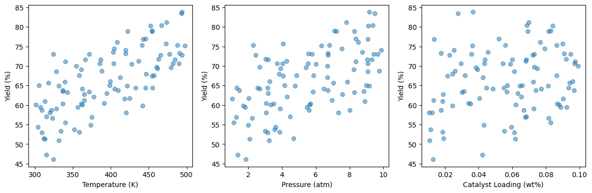
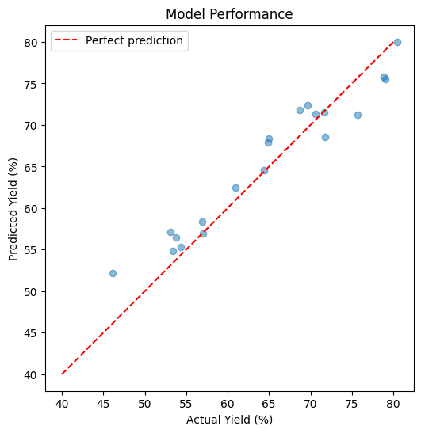

Module 00: Introduction#
Welcome to Data Science and Machine Learning in Chemical Engineering!
Learning Objectives#
By the end of this module, you will:
Understand the scope and goals of the course
Set up your Python environment
Review essential Python concepts
Understand the machine learning workflow
Why Data Science in Chemical Engineering?#
Chemical engineers increasingly work with data:
Process data: Sensor readings, control systems, quality measurements
Experimental data: Lab results, catalyst testing, reaction optimization
Simulation data: CFD, molecular dynamics, process modeling
Literature data: Published properties, kinetic parameters, correlations
Machine learning provides tools to:
Find patterns in complex, high-dimensional data
Build predictive models without explicit physical equations
Optimize processes based on data-driven insights
Quantify uncertainty in predictions and measurements
Course Overview#
Data Foundations (Modules 01-03)#
NumPy for numerical computing
Pandas for data manipulation
Visualization with Matplotlib
Core Machine Learning (Modules 04-08)#
Dimensionality reduction (PCA, t-SNE)
Regression (linear, regularized, nonlinear)
Ensemble methods (Random Forests, Gradient Boosting)
Advanced Topics (Modules 09-11)#
Clustering for unsupervised learning
Uncertainty quantification
Model interpretability
Environment setup#
See Using the course book for downloading notebooks, running them in Colab, or using JupyterLab locally. Run the setup cells at the start of this notebook before the examples. The course data is included in this copy.
Verify Installation#
Run the following cell to check that everything is installed correctly:
import numpy as np
import pandas as pd
import matplotlib.pyplot as plt
import sklearn
import pycse
import shap
import xgboost
print(f"NumPy: {np.__version__}")
print(f"Pandas: {pd.__version__}")
print(f"Scikit-learn: {sklearn.__version__}")
print(f"XGBoost: {xgboost.__version__}")
print("\nAll packages imported successfully!")
NumPy: 2.3.5
Pandas: 2.3.3
Scikit-learn: 1.8.0
XGBoost: 3.1.3
All packages imported successfully!
/Users/jkitchin/Dropbox/emacs/projects/s26-06642/.venv/lib/python3.12/site-packages/tqdm/auto.py:21: TqdmWarning: IProgress not found. Please update jupyter and ipywidgets. See https://ipywidgets.readthedocs.io/en/stable/user_install.html
from .autonotebook import tqdm as notebook_tqdm
Python Refresher#
Lists and Loops#
# List of experimental temperatures (Kelvin)
temperatures = [300, 350, 400, 450, 500]
# Convert to Celsius using a loop
temps_celsius = []
for T in temperatures:
temps_celsius.append(T - 273.15)
print("Celsius:", temps_celsius)
Celsius: [26.850000000000023, 76.85000000000002, 126.85000000000002, 176.85000000000002, 226.85000000000002]
# Better: List comprehension
temps_celsius = [T - 273.15 for T in temperatures]
print("Celsius:", temps_celsius)
Celsius: [26.850000000000023, 76.85000000000002, 126.85000000000002, 176.85000000000002, 226.85000000000002]
Dictionaries#
# Store experiment parameters
experiment = {
'temperature': 400, # K
'pressure': 101.325, # kPa
'catalyst': 'Pt/Al2O3',
'conversion': 0.85
}
print(f"At {experiment['temperature']} K, conversion was {experiment['conversion']:.1%}")
At 400 K, conversion was 85.0%
Functions#
def arrhenius_rate(T, A=1e13, Ea=80000, R=8.314):
"""
Calculate reaction rate constant using Arrhenius equation.
Parameters
----------
T : float
Temperature in Kelvin
A : float
Pre-exponential factor (1/s)
Ea : float
Activation energy (J/mol)
R : float
Gas constant (J/mol/K)
Returns
-------
float
Rate constant k
"""
import numpy as np
return A * np.exp(-Ea / (R * T))
# Calculate rate at different temperatures
for T in [300, 400, 500]:
k = arrhenius_rate(T)
print(f"k({T} K) = {k:.2e} 1/s")
k(300 K) = 1.18e-01 1/s
k(400 K) = 3.57e+02 1/s
k(500 K) = 4.39e+04 1/s
The Machine Learning Workflow#
Most ML projects follow this pattern:
1. Define the problem
↓
2. Collect and explore data
↓
3. Prepare data (cleaning, feature engineering)
↓
4. Choose and train models
↓
5. Evaluate and validate
↓
6. Interpret and communicate
↓
7. Deploy (if applicable)
This course covers steps 2-6, with emphasis on chemical engineering applications.
Example: Predicting Reaction Yield#
Let’s preview what we’ll be able to do by the end of the course.
Problem: Predict reaction yield from experimental conditions.
import numpy as np
import pandas as pd
import matplotlib.pyplot as plt
# Generate synthetic experiment data
np.random.seed(42)
n_experiments = 100
# Experimental conditions
temperature = np.random.uniform(300, 500, n_experiments) # K
pressure = np.random.uniform(1, 10, n_experiments) # atm
catalyst_loading = np.random.uniform(0.01, 0.10, n_experiments) # wt%
# "True" yield model (unknown to us in practice)
yield_true = (
50 +
0.1 * (temperature - 400) +
2 * pressure +
100 * catalyst_loading +
np.random.normal(0, 1.5, n_experiments) # noise
)
yield_true = np.clip(yield_true, 0, 100) # Yield between 0-100%
# Create DataFrame
data = pd.DataFrame({
'temperature': temperature,
'pressure': pressure,
'catalyst_loading': catalyst_loading,
'yield': yield_true
})
data.head(10)
| temperature | pressure | catalyst_loading | yield | |
|---|---|---|---|---|
| 0 | 374.908024 | 1.282863 | 0.067783 | 56.903170 |
| 1 | 490.142861 | 6.727694 | 0.017573 | 73.249533 |
| 2 | 446.398788 | 3.829204 | 0.024547 | 67.968861 |
| 3 | 419.731697 | 5.577136 | 0.090870 | 73.165308 |
| 4 | 331.203728 | 9.168098 | 0.064579 | 64.876717 |
| 5 | 331.198904 | 3.243630 | 0.010828 | 50.969605 |
| 6 | 311.616722 | 4.693446 | 0.019132 | 51.469129 |
| 7 | 473.235229 | 7.799960 | 0.069715 | 81.173609 |
| 8 | 420.223002 | 3.059183 | 0.010456 | 57.997440 |
| 9 | 441.614516 | 1.692819 | 0.024473 | 59.822258 |
Looking at the first 10 rows, we see that our “experiments” have a range of conditions:
Temperatures span 300-500 K (a reasonable range for many chemical reactions)
Pressures range from 1-10 atm
Catalyst loadings are 1-10 wt%
Yields vary from about 50-80%
This is synthetic data, but it mimics what you’d collect from a real experimental campaign. The question we want to answer: can we predict yield from the operating conditions?
Step 1: Visualize the relationships#
Before building a model, we should explore our data. How does yield depend on each variable? Let’s plot it.
# Quick visualization
fig, axes = plt.subplots(1, 3, figsize=(12, 4))
axes[0].scatter(data['temperature'], data['yield'], alpha=0.5)
axes[0].set_xlabel('Temperature (K)')
axes[0].set_ylabel('Yield (%)')
axes[1].scatter(data['pressure'], data['yield'], alpha=0.5)
axes[1].set_xlabel('Pressure (atm)')
axes[1].set_ylabel('Yield (%)')
axes[2].scatter(data['catalyst_loading'], data['yield'], alpha=0.5)
axes[2].set_xlabel('Catalyst Loading (wt%)')
axes[2].set_ylabel('Yield (%)')
plt.tight_layout()
plt.show()

These scatter plots show positive trends between each input variable and yield:
Temperature: Higher temperatures give higher yields (consistent with Arrhenius kinetics for many reactions)
Pressure: The clearest trend—higher pressure improves yield (may shift equilibrium or increase reactant concentration)
Catalyst loading: A positive but weaker trend—more catalyst improves conversion
The scatter in each plot tells us that no single variable fully explains yield. We need all three. This suggests a machine learning model could help.
Step 2: Build a predictive model#
Can we train a model to predict yield from temperature, pressure, and catalyst loading? We’ll use a Random Forest—a powerful and flexible algorithm we’ll study in detail later. For now, just observe the workflow.
# Build a simple model (we'll learn this properly later!)
from sklearn.model_selection import train_test_split
from sklearn.ensemble import RandomForestRegressor
from sklearn.metrics import mean_squared_error, r2_score
# Prepare data
X = data[['temperature', 'pressure', 'catalyst_loading']]
y = data['yield']
# Split into train/test
X_train, X_test, y_train, y_test = train_test_split(X, y, test_size=0.2, random_state=42)
# Train model
model = RandomForestRegressor(n_estimators=100, random_state=42)
model.fit(X_train, y_train)
# Evaluate
y_pred = model.predict(X_test)
rmse = np.sqrt(mean_squared_error(y_test, y_pred))
r2 = r2_score(y_test, y_pred)
print(f"RMSE: {rmse:.2f}%")
print(f"R²: {r2:.3f}")
RMSE: 2.81%
R²: 0.918
How do we interpret these numbers?
RMSE ≈ 2%: Our predictions are typically within ±2 percentage points of actual yield. Since we added noise with σ=1.5, this is close to the theoretical limit—the model learned the signal, not the noise.
R² ≈ 0.93: About 93% of the variance in yield is explained by our three variables. The remaining 7% is experimental noise.
A high R² alone does not establish model quality or overfitting. Compare training and held-out performance, inspect residuals, and check for data leakage and the relevance of the validation split.
Step 3: Visualize model performance#
Numbers are useful, but a plot often reveals more. How do our predictions compare to actual values?
# Visualize predictions
plt.figure(figsize=(6, 6))
plt.scatter(y_test, y_pred, alpha=0.5)
plt.plot([40, 80], [40, 80], 'r--', label='Perfect prediction')
plt.xlabel('Actual Yield (%)')
plt.ylabel('Predicted Yield (%)')
plt.title('Model Performance')
plt.legend()
plt.axis('equal')
plt.show()

This “predicted vs actual” plot is a key diagnostic for regression models:
Perfect predictions fall on the red dashed line
Points above the line: model over-predicted
Points below the line: model under-predicted
Our model shows points clustered around the diagonal with no systematic bias—this is what a good model looks like. In later modules, we’ll see examples of problematic models and learn how to diagnose and fix them.
The Catalyst Crisis: “The First Day”#
A connected story across all lectures. Follow Alex Chen, a career-changing grad student, as she and her team solve an industrial mystery using data science.
Alex Chen stared at the welcome email on her laptop, reading it for the third time. Welcome to the Data Academy. Your cohort has been selected to work on a real industrial problem: the ChemCorp Catalyst Crisis.
Seven years. That’s how long she’d spent at the Beaumont refinery before deciding to go back for her PhD. At 34, she was easily the oldest person in the orientation room. The student next to her—Maya, according to her name tag—was typing something into a terminal without even looking at her fingers.
“First time with Python?” Maya asked, noticing Alex’s hesitation.
“That obvious?”
Maya shrugged. “Everyone starts somewhere. I’m trying to figure out what a yield curve actually means, so…”
Professor Pipeline walked to the front of the room, and the chatter died down. He was older than Alex expected, with the weathered look of someone who’d spent time in plants, not just classrooms.
“Welcome to the Data Academy,” he said. “You’re here because ChemCorp has a problem they can’t solve. Their flagship reactor has been producing inconsistent batches for eighteen months. Good batches, bad batches, no apparent pattern. They’ve tried everything.” He paused. “Everything except asking the data the right questions.”
He clicked to a slide showing a time series—yield percentages bouncing between 40% and 95% with no visible pattern.
“By the end of this course, you’ll solve this. Not me. You.” He looked around the room. “Some of you know chemistry but not coding. Some of you know coding but not chemistry. None of you know everything. That’s the point.”
Alex felt her phone buzz. A text from her sister: How’s the first day? Feel like a genius yet?
She typed back: Feel like I’m in over my head.
The response came immediately: Good. That’s where learning happens.
After orientation, Alex lingered at the mystery board—a whiteboard where students would track clues throughout the semester. It was empty now, waiting.
Eighteen months of bad batches, she thought. Someone’s been staring at this data for eighteen months and seeing nothing.
She wrote the first sticky note and placed it on the board: What are we missing?
It felt like a beginning.
To be continued…
What’s Next#
In the upcoming modules, we’ll learn:
NumPy - How to work with numerical data efficiently
Pandas - How to load, clean, and manipulate data
Visualization - How to explore and present data
Regression - How to build and validate predictive models
Advanced methods - How to handle complex, nonlinear relationships
Uncertainty - How to quantify confidence in predictions
Interpretability - How to understand what the model learned
Let’s get started with NumPy in the next module!
Summary#
Data science and ML are increasingly important in chemical engineering
This course covers practical tools: NumPy, Pandas, scikit-learn, and more
We follow a standard ML workflow: data → model → evaluation → interpretation
All examples will use chemical engineering applications
Check Your Understanding#
Test your knowledge of the concepts covered in this module.
Recommended Reading#
The following resources provide deeper context for the topics introduced in this module:
Scikit-learn: Machine Learning in Python - The official documentation for scikit-learn, the primary ML library used throughout this course. Start with the User Guide for comprehensive tutorials on all algorithms we’ll cover.
Python Data Science Handbook by Jake VanderPlas - A free online book covering NumPy, Pandas, Matplotlib, and scikit-learn. Excellent reference for the foundational tools we use.
Machine Learning for Molecular and Materials Science (Butler et al., Nature 2018) - A landmark review paper on how machine learning is transforming chemistry and materials science. Provides context for why these methods matter in our field.
An Introduction to Statistical Learning - Free textbook covering the statistical foundations of machine learning. Chapter 2 provides an excellent overview of the supervised learning framework.
Google’s Machine Learning Crash Course - A practical, hands-on introduction to ML concepts with interactive visualizations. Good for building intuition about how models learn.